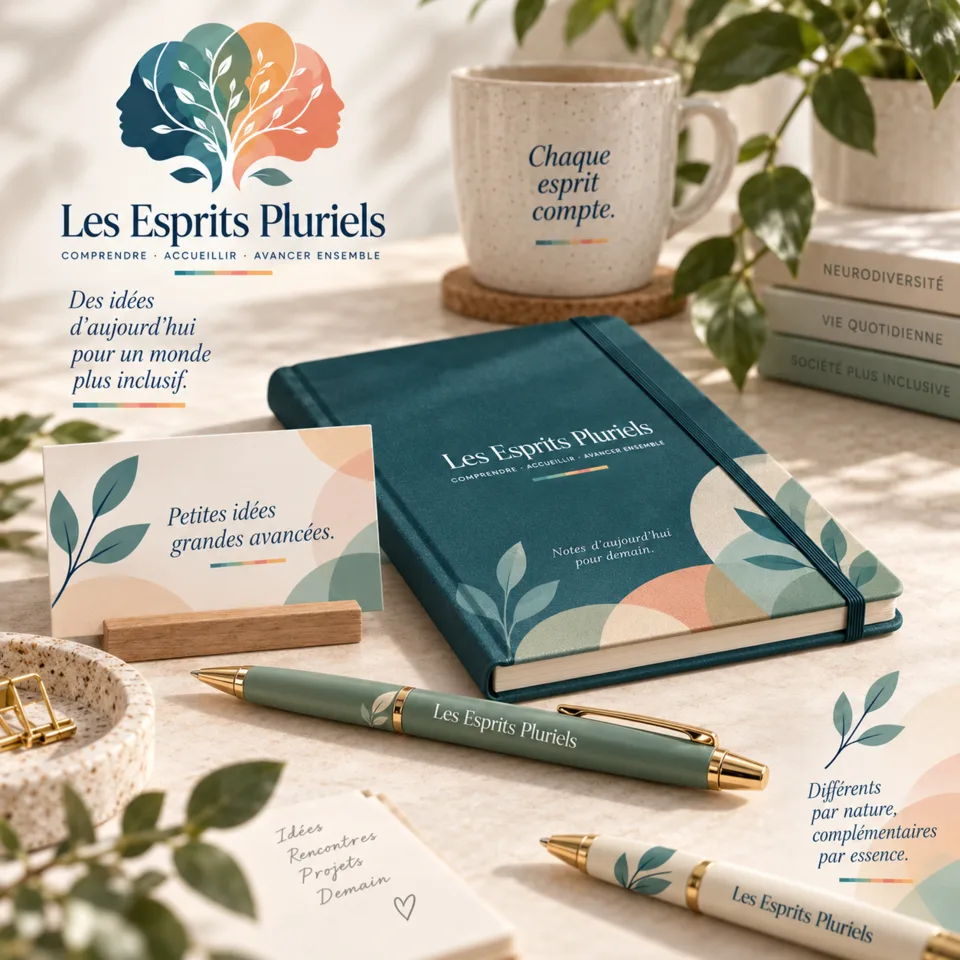

En préparation
01
Livres
Les ouvrages longs constituent la partie éditoriale de la boutique. Ils pourront reprendre des travaux développés dans le projet, les approfondir et leur donner une forme conçue pour une lecture continue.
- Essais et ouvrages de fond
- Éditions liées aux grands dossiers du site
- Formats papier ou numériques selon les projets
La priorité reste la qualité du contenu et de l’édition, pas la multiplication des titres.